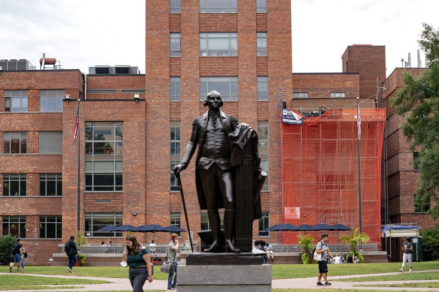
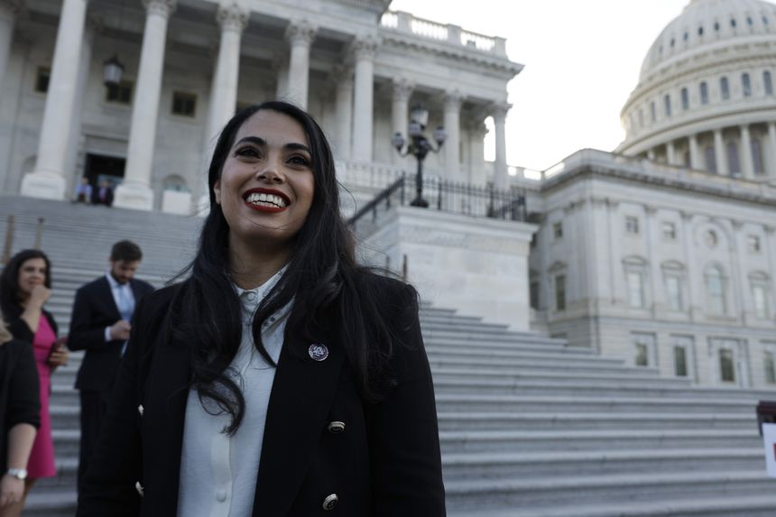
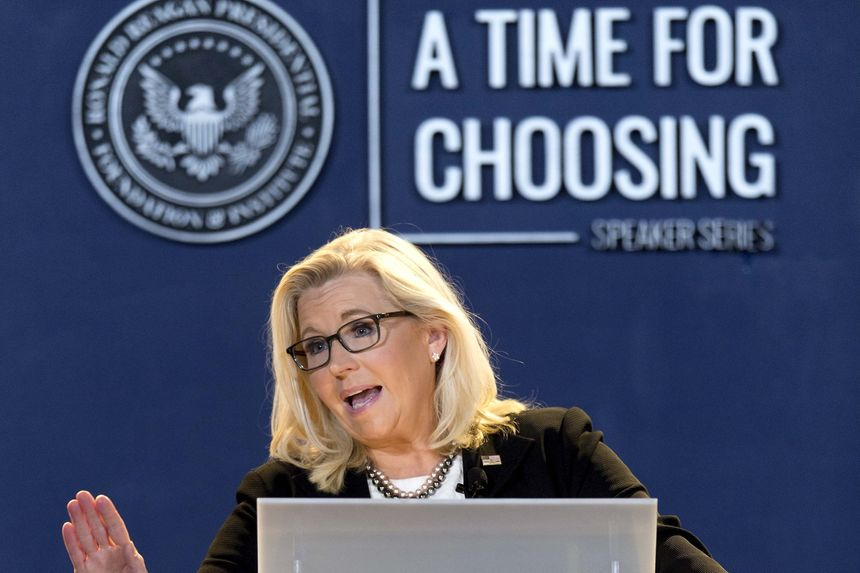
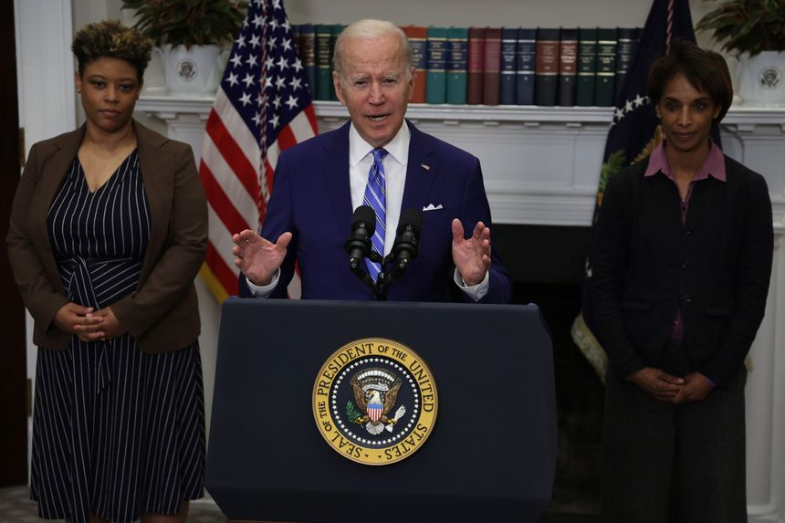
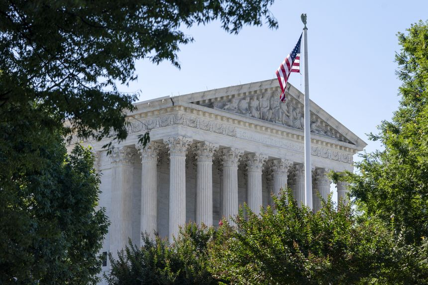
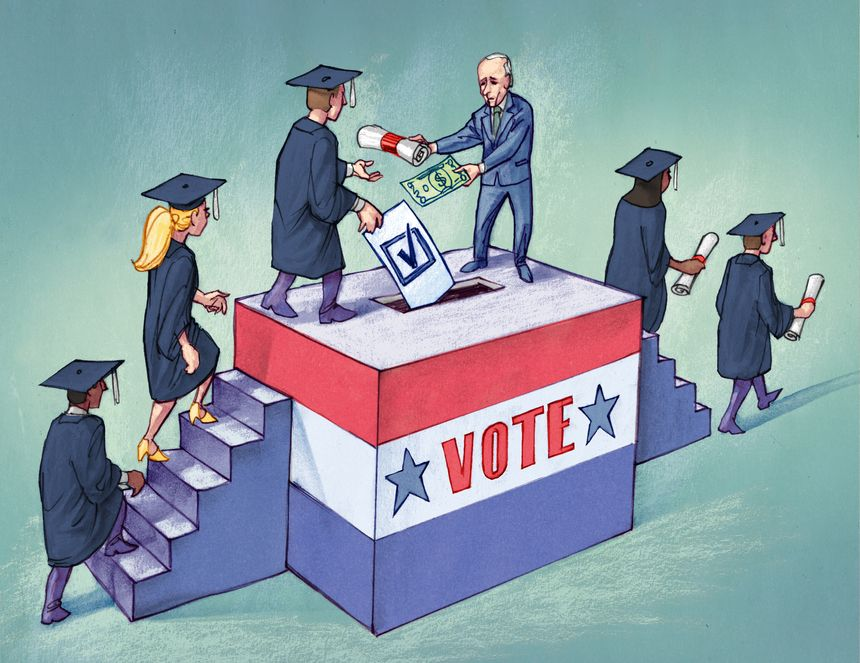
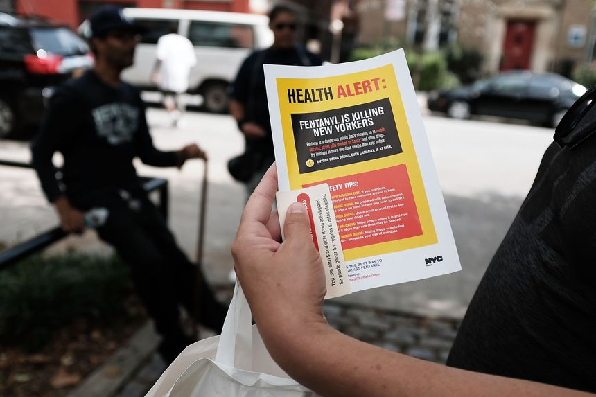
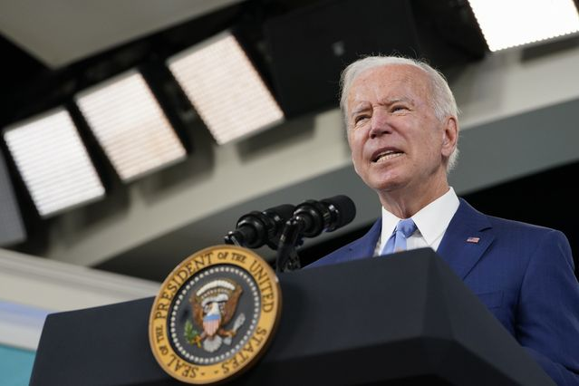
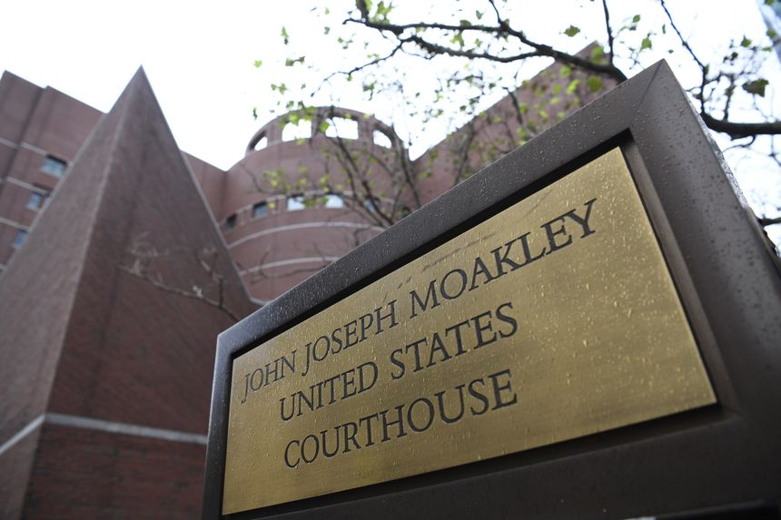
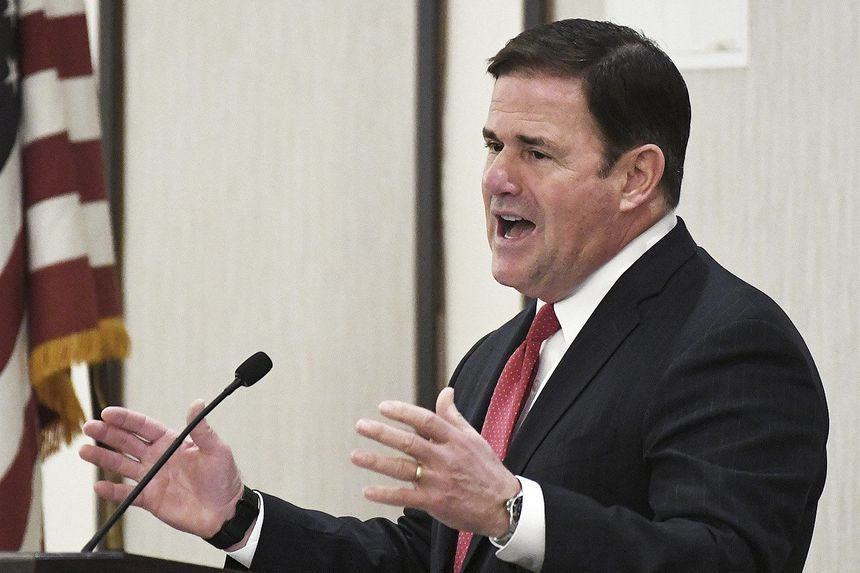

| 时间 | 分类 | 标题 | 副标题 | 正文 | 图片 |
|---|---|---|---|---|---|
| 2022-07-01 18:45:00 | Opinion | A Court for the Constitution | The historic Supreme Court term that ended this week was a triumph for originalism. | A funny thing happened on the way to the supposedly partisan Supreme Court finishing its term: It ruled for the Biden Administration on immigration. Somehow that case isn’t making the dastardly hit list of those eager to declare that the Court is now “illegitimate,” but the Justices applied the law regardless of the policy and decided for the executive branch.(See nearby for elaboration.) This isn’t a partisan Court looking for preferred policy outcomes. It’s a Court that hews to the tenets of originalism, with different shades of emphasis by different Justices. The Court’s jurisprudence is focused more than anything else on who under the Constitution gets to decide policy, not what that policy should be. |
|
| 2022-07-01 18:41:00 | Opinion | California’s Concealed-Carry Leak | A state website released personal data on gun-permit holders. Incompetence or political malice? | California gun owners are up in arms, so to speak, after a state Justice Department website this week leaked their personal information. Didn’t Attorney General Rob Bonta assure the Supreme Court last year that his office could be trusted to safeguard the personal information of nonprofit donors? The Fresno County Sheriff’s Office on Tuesday said it had been informed of a massive data breach affecting California concealed-carry permit holders. Mr. Bonta stumbled in a day later and revealed that the names, birth dates, driver’s license numbers, addresses and criminal histories of every Californian who had applied for a permit between 2011 and 2021 had been leaked. |
|
| 2022-07-01 18:39:00 | Opinion | Killing the Filibuster Is on the Ballot | If the Senate’s 60-vote rule goes for abortion, it goes for everything. | As if the stakes for November’s elections weren’t high enough, President Biden now says he wants to bust the Senate’s filibuster to guarantee access to abortion. “We have to codify Roe v. Wade in the law,” Mr. Biden said this week. “If the filibuster gets in the way, it’s like voting rights, we provide an exception for this.” It won’t happen before November, since the cooler heads of Sens. Kyrsten Sinema and Joe Manchin are defending the filibuster’s moderating purpose. Democrats will no doubt forget to thank them when Republicans next take power. But how long can they hold off progressive demands? The Senate is 50-50, so if Democrats pick up two seats in the midterms, that could be the end. |
|
| 2022-07-01 18:38:00 | Opinion | The Supreme Court Upholds Biden’s Border Blunder | The Justices defer to executive power on immigration. | Progressives upset with the Supreme Court’s recent rulings are quick to call it partisan. But then how do they explain the Court's decision to uphold a Biden immigration policy despite valid concerns about chaos at the border? In Biden v. Texas on Thursday, the Court voted 5-4 to uphold the President’s decision to cancel the Remain in Mexico policy. Chief Justice John Roberts and Justice Brett Kavanaugh joined the three liberals. President Trump started the Migrant Protection Protocols program in 2019 to remove migrants from the U.S. while their asylum claims are processed. It led to the expulsion of thousands of border crossers, and likely deterred many more from attempting the journey. |
|
| 2022-07-01 18:36:00 | Opinion | A Warning From Australia’s Power Crisis | Green mandates cause shortages, as Canberra takes over the electricity market. | Australia’s new Labor Prime Minister Anthony Albanese has promised to ramp up green energy, but a national electricity crisis is showing that fossil fuels are hard to drop. Oz’s power crunch offers a warning for America’s political class, if it’s willing to listen. Australia’s grid operator in June suspended the national spot market for power to prevent looming blackouts. Regulators ordered power generators using fossil fuels when they could run while also fixing prices. The grid operator last week lifted market controls but warned they could be reimposed if prices spike. |
|
| 2022-07-01 18:22:00 | Opinion | Should We Follow the Science Instead of the Votes? | A thought experiment in replacing elections with surveys. | The Democrats, ever solicitous of the people’s welfare and comfort, want to make voting easier. The Republicans, guardians of public morality, want to make sure votes are genuine. So why not abandon elections and replace them with surveys? Surveys turn citizens into “respondents” answering from home by phone or computer. Respondents are scientifically selected to represent a slice of the population. Answering is easy, to please Democrats, and since your qualities and attributes are selected without regard to your name, there’s no risk of fraud, which should please Republicans. Now that we have surveys made reliable by the science of polling, why do we need elections with their hoopla, ceremony, and expense—not to mention their chanciness, rowdiness and unreason? |
|
| 2022-07-01 17:09:00 | Pro Bankruptcy | Risky Borrowers Largely Dodged Bankruptcy So Far This Year. Now the Easy Money Is Ending. | Corporate defaults in the U.S. are expected to grow modestly from historically low levels due to rising rates and slowing economy | U.S. corporate defaults and bankruptcies stayed muted in the first five months of this year but market volatility, rising interest rates and a potential economic slowdown are making investors nervous about low-rated debt. Debt defaults were relatively avoidable for much of the past two years as the Federal Reserve kept interest rates at ultralow levels, a trend that continued early this year. Even troubled companies have been able to borrow in a supportive credit market. Yield-hungry investors have helped stave off defaults, finding ways for businesses to take on more debt and delay a financial reckoning. |
|
| 2022-07-01 16:59:00 | Opinion | Cancel Culture Goes to Washington | George Washington University must change its nam, says an article in, yes, the Washington Post. | George Washington is a problem for George Washington University, according to the Washington Post. For years, the university in the nation’s capital has struggled with the shadow cast by President Washington’s ownership of slaves. In 2020 university officials began investigating the school’s sports teams’ name, the Colonials, because of the “ways colonists ravaged communities of color.” Last month “Colonials” disappeared. This spring, the Washington Post published an op-ed by Caleb Francois, a senior at the school, insisting that the university deal with “systemic racism, institutional inequality and white supremacy” by dropping the Washington name completely and renaming the university for Frederick Douglass. George Washington certainly did own slaves. In addition to the 10 he inherited from his father, he accumulated another 65 through outright purchase over the years. When he married Martha Dandridge Custis in 1759, she brought another 84 slaves to the household at Mount Vernon. By 1786 the slaves numbered 216. In 1799, the last year of his life, Washington owned 317 men, women and children. Even in the years Washington served as the first president, he kept at least eight slaves in his home in the first capitals, New York and Philadelphia. |
 |
| 2022-07-01 16:57:00 | Opinion | Hunter Biden and the Press: Who’s the Real Degenerate? | U.S. intelligence meddling in the 2020 election is likely to have a longer tail than we realize. | Conservative pundits like to note (and note and note) that the headlines would be 12 feet tall if a son named Trump carried on the way Joe Biden’s son Hunter did. If Trump junior lost control of documentation in the form of texts, emails and self-made videos testifying to his incriminating behavior, 2.5 million years from now residents of the Andromeda galaxy would conclude it was the most important thing that ever happened on Planet Earth. But this gets the dynamic wrong. The headlines would be 12 feet tall if another politician’s son behaved as Hunter did in a universe that also did not contain Donald Trump and his psychologically distorting effect on every media decision about what to cover and how to cover it. (See the psychiatry of “splitting.”) |
|
| 2022-07-01 16:54:00 | Opinion | Notable & Quotable: Culture War | ‘This ‘culture war’ appears to be the first war in history that only one side is fighting.’ | James Bowman writing in the June issue of the New Criterion: |
|
| 2022-07-01 16:28:00 | Opinion | The Conservative Supreme Court Has Arrived | From abortion and religion to guns and administrative law, ‘I don’t think Justice Thomas has ever had a better term,’ leading appellate litigator Paul Clement says. | Josh Hawley of Missouri came to bury originalism, not to praise it—and he was wrong. “It represents the end of the conservative legal movement,” he said on the Senate floor two years ago, referring to a decision by Justice Neil Gorsuch that redefined “sex discrimination” to protect gay and transgender employees. On Dec. 5, four days after the justices heard oral arguments in Dobbs v. Jackson Women’s Health Organization, Catholic University of America legal scholar Joel Alicea issued a more sympathetic warning. “The conservative legal movement finds itself at its most precarious point since its inception in the early 1970s,” he wrote. If the court declined to overturn Roe v. Wade (1973), Mr. Alicea argued, it would “likely shatter the movement,” bringing “an end to one of the most successful intellectual and political projects of the past half-century.” Instead, this was the term when the conservative court arrived. Roe and its successor, Planned Parenthood v. Casey (1992), are no longer good law. Neither is Lemon v. Kurtzman (1971), which set up a confusing three-part test to keep religion out of the public sphere. The court expanded gun rights for the first time in 12 years. And it limited the executive branch’s power to regulate without explicit authorization from Congress. |
|
| 2022-07-01 16:26:00 | Opinion | Hispanic Republicans Have Democrats Seeing Red in Texas | Mayra Flores won a congressional district that went for Hillary Clinton by more than 20 points. | Harlingen, Texas The birds were making a tremendous racket. We were trying to shoot a campaign commercial for Mayra Flores outside the cotton gin where her father once worked. The foreman remembered Ms. Flores from when she was a teenager. She’d toiled in the same fields, now filled with birds so noisy our camera crew found it impossible to record. A worker retrieved a pistol from his truck and fired it into the air. The birds flew off and we got the shot. |
 |
| 2022-07-01 14:55:00 | Opinion | ‘Strangely, Beautifully Alive’ | American traditions and Independence Day. | This is the weekend for reflection upon the most important sentence ever written in this country: Of course the Declaration of Independence, created 246 years ago this week, contained many other useful sentences. One in particular may offer a healthy perspective for those among us who are inclined to restructure American governance when it doesn’t yield a desired political outcome: |
|
| 2022-07-01 11:54:00 | Opinion | Stuck Between Extremes on Abortion? | It should be used only as a solemn, compassionate and unfortunate alternative to much worse options. | Regarding Rebecca Sugar’s op-ed “My Mind Isn’t Made Up About Abortion” (June 28): I attended college during the full-throated women’s-lib era in the early ’70s. While women today have unfettered access to an array of near-infallible female contraceptive choices for consensual sex, we mostly didn’t. In hindsight, I believe we impressionable ’70s college coeds got far more societal and peer pressure to exercise sexual freedom than was wise or good for us. Yet no matter how enthusiastically we explored that freedom, my friends and I never confused abortion with birth control. We recognized an overriding priority to control our reproductive capability through responsible contraception, not termination. Abortion, although legal until fetal viability, remained the most desperate of last resorts because intentionally aborting our fetus felt like murdering our baby—tragic, traumatic, life-changing and a somber choice grieved regardless of rationale. |
|
| 2022-07-01 11:51:00 | Opinion | Noonan and What’s Fair and True at the Jan. 6 Hearings | It is easy to tell a compelling story when only one side gets to present evidence. | In “Trump and Biden Both Face Rejection” (Declarations, June 25), Peggy Noonan heaps praise on the Jan. 6 hearings for yielding a “coherent story” of President Trump’s culpability. That is easy to do when only one side gets to present evidence, call witnesses and disregard potentially exculpatory evidence. A striking parallel exists between the Jan. 6 hearings and the Biden administration’s proposed Title IX rule. Both condone procedural unfairness and call it justice. |
 |
| 2022-07-01 11:49:00 | Opinion | Fight the Caricature of Clarence Thomas’s View | The Supreme Court justice has been predictably but erroneously pilloried for his concurrence in Dobbs. | Justice Clarence Thomas has been predictably but erroneously pilloried for writing in his Dobbs concurrence that other precedents—including the rights to contraceptives, same-sex marriage and consensual gay sex—ought to be reversed. But that’s not quite what he wrote (“Abortion Goes Back to the People,” Review & Outlook, June 25). Instead, Justice Thomas noted that those precedents relied on the doctrine of substantive due process, which he and many legal scholars believe to be incoherent. Alternatively, the justice would inquire whether those same rights might be upheld under the Privileges or Immunities Clause of the 14th Amendment, something that libertarians have been advocating for decades. |
|
| 2022-07-01 08:59:00 | Arts | Sotheby’s CEO on Why the Art Market Is Soaring | From inflation to the rise of Asian collectors, Charles Stewart reveals the dynamics fueling robust auction sales | Amid London’s ongoing summer auction series, Sotheby’s Chief Executive Charles Stewart is taking stock of the global art market, and he likes what he sees. On Wednesday, Sotheby’s sold $182 million worth of art over a couple hours in London, meeting the house’s expectations even though a few works by artists such as David Hockney and Ernst Ludwig Kirchner failed to find buyers. Top sales included Francis Bacon’s $53 million “Portrait of Lucian Freud” and Andy Warhol’s $16 million “Self Portrait.” Feverish bidding followed young upstarts like Flora Yukhnovich, whose smudgy Rococo-style painting, “Boucher’s Flesh,” sold to a bidder in Asia for $2.8 million—10 times its low estimate. |
|
| 2022-07-01 07:30:00 | CFO Journal | Companies Raise Less Capital as Markets Drop, Interest Rates Rise | With the Fed signaling more rate increases, finance executives are taking a close look at their companies’ financing needs | ||
| 2022-07-01 05:30:00 | Economy | Derby’s Take: Two Fed Indexes Show Underlying Inflation Picking Up | Cleveland and Dallas Fed indexes show higher May inflation | Two Federal Reserve indexes that aim to track underlying rates of inflation show that pressure continues to mount on that front, which will likely help keep the U.S. central bank on the path to raise rates. On Thursday, the Federal Reserve Bank of Dallas said that compared to a year ago, the Trimmed Mean PCE index rose to 4.0% for May from 3.8% in April and 3.7% in March. |
|
| 2022-07-01 05:30:00 | Logistics Report | Port Labor Talks Enter New, High-Stakes Phase With Contract Expiring | The contract governing West Coast dockworkers runs out late Friday. Some importers are already rerouting cargo away from the big trans-Pacific gateways amid fears of slowdowns and disruptions | ||
| 2022-06-30 20:26:00 | Risk & Compliance Journal | Most Countries Lack Crypto Information-Sharing Laws, Watchdog Says | Only about 30% of jurisdictions surveyed said they had passed travel-rule legislation to help prevent illicit use of crypto | ||
| 2022-06-30 19:03:00 | Opinion | The Supreme Court Restores a Constitutional Climate | A 6-3 ruling in West Virginia v. EPA sets guardrails on the administrative state. | This has been an historic Supreme Court term, and the Justices kept it going to the end with a major 6-3 decision Thursday (West Virginia v. EPA) reining in the administrative state. The subject was climate regulation but the message should echo across the federal bureaucracy. The question was whether the Environmental Protection Agency could invoke an obscure statutory provision to re-engineer the nation’s electric grid. Prior to the 2015 Obama rule, the EPA had used the provision only a handful of times to regulate pollutants from discrete sources. |
|
| 2022-06-30 18:57:00 | Opinion | Michigan’s Banana Republic Prosecution | The state Supreme Court invalidates that dubious charges against former Gov. Rick Snyder. | The prosecution of political opponents is a feature of banana republics that increasingly infects the U.S. A case in point is the prosecution of former GOP Gov. Rick Snyder in the Flint water case, which a unanimous state Supreme Court declared invalid this week. Democrats claimed the former Governor and his staff ignored Flint’s problem with lead-tainted water, never mind that the Obama Environmental Protection Agency knew about it and did nothing. Democratic Attorney General Dana Nessel ordered Solicitor General Fadwa Hammoud and Wayne County Prosecutor Kym Worthy to investigate the Flint fiasco. |
|
| 2022-06-30 18:54:00 | Opinion | Russia’s Snake Island Retreat | Ukraine repels the invaders from a key Black Sea stronghold. | Russian soldiers withdrew Thursday from Snake Island, a small but significant outpost in the Black Sea. The Ukrainian victory doesn’t signal a major change in the course of the war, but it does weaken the Kremlin’s Black Sea blockade. Snake Island is located just off the coast near Ukraine’s border with Romania and close to the mouth of the Danube River. Seizing it was a top priority when Russia launched its invasion. It succeeded—but only after the soldiers defending it famously told the Russian warship to you-know-what. |
|
| 2022-06-30 18:51:00 | Opinion | Justice Stephen Breyer Retires | Conservatives might miss the pragmatic liberal Supreme Court Justice. | We didn’t often agree with Supreme Court Justice Stephen Breyer, but tip a cap to his honorable 58-year career that included stints in all three branches of government. Justice Breyer, age 83, resigned at noon on Thursday to make way for his successor, Justice Ketanji Brown Jackson. Justice Breyer’s 28 years on the High Court were informed by his time working in the Justice Department’s Antitrust Division and at the Senate Judiciary Committee, where he helped deregulate airlines in the late 1970s. As a judge he was a pragmatist fond of balancing tests, not an ideologue. He broke ranks to rule for religious liberty in Trinity Lutheran (2017). His law-and-economics view of antitrust might soon be sorely missed. |
|
| 2022-06-30 18:50:00 | Opinion | Behind Biden’s EPA Power Grab | A pen and phone are no substitute for a statute duly passed by Congress. | The Environmental Protection Agency had its way with both the Clean Air Act and the U.S. Constitution for decades. The Supreme Court’s decision Thursday in West Virginia v. EPA may be the beginning of the end of this baleful era. It closes the window on sweeping climate action by federal agencies without a congressional mandate. In a 6-3 decision by Chief Justice John Roberts, the court held that the Clean Air Act doesn’t authorize the Clean Power Plan, or CPP, through which the Obama administration sought to force America’s electricity sector to switch to renewable sources. The plan would limit each state’s total allowable greenhouse gas-emissions under the banner of “performance standards” for power plants. That was the strategy the EPA had pursued for nearly a decade as its best option for imposing climate regulations by unilateral executive action. |
|
| 2022-06-30 18:49:00 | Opinion | The Hard Truths of American History | Teaching all aspects of the U.S.’s story will help de-politicize education and foster democracy. | July 4 is the most sacred date on the American civic calendar. This year marks the 246th time Americans have celebrated the monumental achievement of founding a nation that, in the words of Abraham Lincoln, was “conceived in liberty, and dedicated to the proposition that all men are created equal.” But the celebration comes with hard truths of history. The Fourth reminds us of Americans’ struggle, as the Constitution puts it, to “form a more perfect union.” The stain of human bondage sparked the Civil War. The suffragettes of the 19th and early 20th centuries fought for the right to vote. Japanese-Americans during World War II were forced into internment camps. And men such as Medgar Evers and Martin Luther King Jr. paid with their lives to attain equality long denied to African-Americans. When we consider our past, sober reflection should accompany joyful celebration. |
|
| 2022-06-30 18:48:00 | Opinion | Where’s Justice Frankfurter When You Need Him? | Hot dogs have occasioned a surprising number of legal disputes. | Americans consume 20 billion hot dogs a year, according to the National Hot Dog and Sausage Council. On Independence Day alone, Americans will enjoy 150 million—enough to stretch from Los Angeles to the District of Columbia five times. With such a jaw-dropping number of wieners in circulation, it’s no wonder that they often play a role in legal disputes. On July 4, 2010, a Dillard’s department store held a cookout for its employees. A manager instructed that the leftover hot dogs be frozen and saved for Labor Day. The following day, Nolan Koewler ate two of the earmarked hot dogs. The police were summoned, and to avoid arrest, Mr. Koewler admitted to the theft. |
|
| 2022-06-30 18:47:00 | Opinion | The Hong Kong Handover at 25 | China has turned one of Asia’s freest cities into a grim police state. | When the U.K. handed Hong Kong over to China on July 1, 1997, the city was one of Asia’s freest and most open. Now it is a repressive police state. What went wrong? For the first few years after the handover, Beijing behaved—at least on the surface—reasonably well. When I left in 2002, I was cautiously optimistic that the “one country, two systems” principle would persist. Only over the past decade did it begin to become apparent that Beijing’s iron grip was tightening. After the 2014 Umbrella Movement protests demanding universal suffrage, freedoms began to erode visibly. Protests in 2019 were met with shocking police brutality. The final straw was the imposition of the draconian National Security Law two years ago, which eradicated any remaining liberties and landed former legislators, journalists, trade unionists and civil-society activists in jail. |
|
| 2022-06-30 18:46:00 | Opinion | The Courage of Jan. 6 Witness Cassidy Hutchinson | She showed more guts than any of Trump’s men. Her testimony strengthens the case for prosecution. | Only a woman would have done what Cassidy Hutchinson did because only a woman, in a place of such power and prestige, would have registered everything and taken such close notes instead of spending that time swanning around being important. Here she was, all by herself, 26 years old, in front of the whole country. |
|
| 2022-06-30 18:40:00 | Opinion | America’s Coming Charity Deficit | Young people aren’t attached to religion, which could augur ill for their future giving. | The decline of religious belief in America will cause incalculable spiritual damage, but even nonbelievers should worry about the practical consequences of an increasingly secular U.S. Consider the ticking time bomb of philanthropic demise set to detonate in the coming years. “People who are religiously affiliated are more likely to make a charitable donation of any kind, whether to a religious congregation or to another type of charitable organization,” according to a 2017 report from Giving USA. The organization found that 62% of religious households give to charity, compared with 46% of nonreligious ones. The Almanac of American Philanthropy reports that those who attend religious services regularly give to secular causes at more than double the rate of those who don’t. |
|
| 2022-06-30 17:47:00 | Opinion | A Whitewash of Biden’s Record on Inflation | The only defense of the president’s reckless budget policy is that the Fed pursued an even more irresponsible monetary policy. | Alan Blinder is right that multiple factors contributed to inflation’s recent surge (“Biden Isn’t to Blame for Inflation,” June 29). But his suggestion that the American Rescue Plan added only 0.1% to today’s inflation rate stretches credulity. The $1.9 trillion stimulus package in March 2021 was preceded by almost $3 trillion in stimulus the previous year. The U.S. economy received over 20% of gross domestic product in increased public spending. That dwarfed early 2021’s output gap of around 4% of GDP. The only defense of President Biden’s reckless budget policy is that Jerome Powell’s Federal Reserve pursued an even more irresponsible monetary policy by keeping interest rates at their zero bound and by allowing the broad money supply to increase by some 40% over a two-year period. |
 |
| 2022-06-30 17:46:00 | Opinion | Susan B. Anthony and the Suffragists’ Approach to Abortion | Many wanted to keep discussions about sex far away from the conversation about suffrage. | Neither Susan B. Anthony nor Elizabeth Cady Stanton wrote any of the antiabortion letters or articles that Colleen Kelly Spellecy and Eric Anthony cite in “Yes, Susan B. Anthony Was Pro-Life” (op-ed, June 14). Neither suffragist left any “extensive” writings on abortion. Neither took a public stand on the issue because they and other suffragists wanted to keep discussions about sex far away from the conversation about suffrage. Some of these articles were written by Parker Pillsbury, Stanton’s co-editor at the Revolution, or by the newspaper’s financier, George Francis Train. Others were merely reprints from other publications to finance the weekly publication of Anthony’s cash-strapped paper. |
|
| 2022-06-30 17:45:00 | Opinion | Schools Need Adequate Funding, Not Vouchers | It is underfunded schools—serving students with the highest need for additional help—that have deplorable outcomes. | In “Money for Children, Not Schools” (op-ed, June 23), Jeff Yass touts a free-market fantasy of universal school vouchers as a solution to what he calls “failing school systems.” But where schools are adequately funded, students flourish. It is underfunded schools—serving students with the highest need for additional help—that have deplorable outcomes. Let’s take his example of Philadelphia, where state statistics show schools spend $18,754 a year on each student, including part of the federal Covid-19 funding boost. Mr. Yass uses a different figure, $24,000 a student, perhaps because Pennsylvania school districts fund students who attend charter schools, with pass-through revenue included in their budgets. As the Urban Institute noted, the census miscalculates per-student spending for Pennsylvania by including charter funding but not charter students. |
|
| 2022-06-30 17:30:00 | Opinion | ‘Epiphany’ Review: Conversation and Confession | In Brian Watkins’s new play at Lincoln Center’s Mitzi E. Newhouse Theater, Marylouise Burke stars as the host of a bizarre dinner party where weighty topics are the dry entree to disappointment. | New York |
|
| 2022-06-30 17:07:00 | Opinion | Harris Clarifies on Biden ’24 | But another presidential call to break legislative norms suggests he’s running. | There’s an increasingly tiresome habit among media folk and elected Democrats to declare the United States broken and in need of structural repair whenever they don’t get the political outcomes they want. There’s an equally tiresome habit among celebrities to choose such moments to announce plans to abandon the U.S. entirely. As for this week’s celebrity posturing, Samantha Chery reports in the Washington Post: |
|
| 2022-06-30 15:15:00 | Risk & Compliance Journal | U.S. Promises Bigger Fines, Stepped Up Enforcement of Sensitive-Technology Restrictions | The Commerce Department’s Bureau of Industry and Security is trying to give its export-control rules sharper teeth, according to a senior official | ||
| 2022-06-30 14:27:00 | Pro Bankruptcy | Enjoy Technology, Led by Ex-Apple Executive Ron Johnson, Files for Chapter 11 to Sell Itself | The tech retailer that showcased home delivery and service was started by Mr. Johnson, who pioneered Apple’s Genius Bar, but later slipped as chief of J.C. Penney | Enjoy Technology Inc., a retail technology company started by former Apple Inc. retail strategist and chief executive of J.C. Penney Ron Johnson, filed for bankruptcy on Thursday, citing difficulties raising new capital in a difficult fundraising market for tech firms. The filing came less than a year after the company went public through a merger with Marquee Raine Acquisition Corp., a special-purpose acquisition company. The transaction helped the company raise net proceeds of $112.6 million, according to court papers. |
|
| 2022-06-30 14:06:00 | CIO Journal | Startup Founders Say Venture-Capital Investors Are Driving Harder Deals | ‘A 30% haircut right now is what we’re seeing,’ the co-founder of one startup said at the Collision tech conference in Toronto | ||
| 2022-06-30 11:44:00 | Opinion | Economic Growth, Not Austerity, Is the Answer to Inflation | Lawrence Summers was right about the danger of excessive spending. But now he wants high unemployment. | Lawrence Summers, who served as Bill Clinton’s Treasury secretary, rocked the Democratic establishment last year by predicting that his party’s excessive spending would cause inflation. He was right. But he’s wrong now. On June 20 he told Bloomberg that “we need five years of unemployment above 5% to contain inflation”—or perhaps one year of 10% unemployment. That would throw millions of Americans out of work. Mr. Summers echoed the advice of his uncle, the Nobel economics laureate Paul Samuelson, who famously wrote in 1980, a time of double-digit inflation, that “five to ten years of austerity, in which the unemployment rate rises to an eight or nine percent average and real output inches upward at barely one or two percent per year, might accomplish a gradual taming of U.S. inflation.” |
|
| 2022-06-30 08:30:00 | Fashion | Why Long Nails Are Everywhere This Summer | Whether natural, press-on, gel or acrylic, nails are reaching new lengths. | ||
| 2022-06-30 07:30:00 | CFO Journal | Finance Chiefs Weigh Costs and Benefits of Stock Splits | Companies can make share purchases more affordable for employees and individual investors when dividing their shares | ||
| 2022-06-30 06:00:00 | Logistics Report | Trucking Company Schneider Invests in Chemicals Supply Marketplace | The minority stake in ChemDirect includes an agreement that will make Schneider a transportation and logistics provider for the startup | ||
| 2022-06-29 19:03:00 | Risk & Compliance Journal | U.K. Fines Johnson Matthey Subsidiary Over Syria Sanctions Violation | Action against U.A.E.-based Tracerco comes after regulator vowed to embrace stricter standards in sanctions enforcement | ||
| 2022-06-29 18:51:00 | Opinion | NATO Gets a Military Upgrade With Finland and Sweden | The alliance adds the Nordic nations, but Europe is still contributing too little. | Russia’s invasion of Ukraine makes this week’s NATO summit one of the most important in years, and so far mostly good. Turkey finally dropped its opposition to Finland and Sweden joining the alliance, which is also buttressing its military capability against the Russian threat. “We met, we discussed and we found a good solution,” said NATO Secretary-General Jens Stoltenberg. The leaders of all three countries signed a document in which Helsinki and Stockholm vowed to cooperate with Ankara in its fight against Kurdish terrorism. The memorandum also said that “there are no national arms embargoes” between the three countries. |
|
| 2022-06-29 18:48:00 | Opinion | Democrats for Trumpians | They claim to hate Trump but want to nominate his acolytes. | One of the dark ironies of this election year is that while Democrats try to disqualify Donald Trump via the Jan. 6 hearings, they are helping to nominate his allies to run against in November. They had mixed success in Tuesday’s GOP primaries, but the tactic gives new meaning to cynical politics. Illinois Democratic Gov. J.B. Pritzker has a record of failure that should make him vulnerable this fall. But lucky for him, he’ll face the Republican his money helped nominate. State Sen. Darren Bailey won the GOP primary with 58% of the vote Tuesday after Democrats spent more than $30 million on his behalf. |
|
| 2022-06-29 18:47:00 | Opinion | The Supreme Court Says Oklahoma Can Protect Native American Victims | In a 5-4 decision in Castro-Huerta, the Justices begin to clean up their tribal McGirt mess. | When the Supreme Court in 2020 resurrected Native American reservations that now cover nearly half of Oklahoma, it was a win for tribal rights. But it was a calamity for Native crime victims, who lost access to justice. On Wednesday the Justices voted 5-4 to correct part of their mistake. Oklahoma v. Castro-Huerta involved a man sentenced to 35 years for child neglect. His disabled 5-year-old stepdaughter weighed 19 pounds when she was rushed to the hospital. Her crib, the state said, was “filled with bedbugs and cockroaches and contained a single, dry sippy cup, the top of which was chewed through.” |
|
| 2022-06-29 18:44:00 | Opinion | Biden’s Raid on the Permian Basin | A new ozone decision would force less drilling in America’s most productive shale reserve. | President Biden and his aides keep saying they’re doing everything they can to produce more oil and gas in the U.S. Apparently they think Americans aren’t paying attention, because his Administration keeps making rule after rule to throttle production. The latest comes from the Environmental Protection Agency, which has announced it may soon deem parts of the Permian Basin in Texas and New Mexico in “non-attainment” with its ozone standards. Green groups last spring petitioned the EPA to do this to effectively force curbs on shale fracking. The Permian is currently the most productive, and cost-effective, oil shale reserve in the U.S. It accounts for 43% of U.S. oil production. |
|
| 2022-06-29 18:41:00 | Opinion | The Trump 2024 Test Runs | Can nominees who endorse his baseless claims about 2020 voter fraud win in November? | To the exclusion of almost all other issues, Donald Trump focuses his speeches and postings on the discredited claim that he won the 2020 election, then had it stolen by massive fraud involving hundreds of thousands of votes. This continues despite Team Trump’s failure to provide compelling evidence of its fraud claims. A willingness to join Mr. Trump in condemning the 2020 results—or at least raising doubts about the outcome—often seems to be a precondition for his endorsement. This appears to be particularly true in races for secretary of state—the officer who, in most states, oversees part or all of the election process. As a result, some Republican primaries will serve as preliminary tests of how this message could play in battleground states in 2024. One notable example was the race to be the GOP nominee for secretary of state in Nevada, a state Joe Biden won by 33,596 votes (2.4% of the total vote). The candidate who won, Jim Marchant, made claims of 2020 election fraud the centerpiece of his primary. “My work exposing” it, he said, “has a lot of people very nervous. The Communist/Socialist/RINO Cabal is coming after me hard.” Mr. Marchant organized the America First Secretary of State Coalition, or AFSOSC, to back like-minded candidates. He is more radical on this point even than Mr. Trump, arguing that “your vote hasn’t counted for decades, you haven’t elected anybody.” The president tends to confine himself to lamenting his own loss. |
|
| 2022-06-29 18:40:00 | Opinion | Why Does China Own So Much of Ukraine? | Other countries should be careful about allowing sales of farmland to hostile powers. | Russia’s invasion of Ukraine is causing global hunger and galloping food prices, and future supply-chain disruptions will bring more such misery. Many countries are realizing that they should grow more food, but they’ve sold much of their best land to China, which uses it to feed its own population. A few years ago, China bought nearly one-tenth of Ukraine’s arable farmland. Countries should start screening those seeking to buy their farmland, as they already do with prospective purchasers of sensitive technology. “There can be no effective solution to the global food crisis without reintegrating Ukraine’s food production, as well as the food and fertilizer produced by Russia, into world markets,” United Nations Secretary-General António Guterres said on June 24, warning that the world faces multiple famines this year and worse in 2023. But Ukrainian grains and other foods won’t be able to enter the world market any time soon because the sea route remains blocked by Russia. Ukraine is sending some grain to world markets via rail to Poland and Romania, but doing so is laborious and expensive. Before the war, around 90% of Ukraine’s grain was exported via its sea ports. |
|
| 2022-06-29 18:21:00 | Opinion | Rising Interest Rates Will Crush the Federal Budget | The interest costs of Treasury debt are about to soar while revenue from capital-gains taxes will plunge. | The Federal Reserve’s policies of increasing interest rates and quantitative tightening—reducing its $8.9 trillion balance sheet—will increase the volume and cost of federal government borrowing, slamming the federal budget and exposing the consequences of decades of deficit spending. The impact will be felt even without a recession, but if the economy does contract, the government will have limited capacity to spur a recovery with fiscal stimulus. |
|
| 2022-06-29 18:20:00 | Opinion | More Supply-Chain Disruptions Are Coming | West Coast ports are negotiating a new labor contract, and it’s likely to cause major slowdowns, which could worsen inflation. | Things look as if they’re almost back to normal at the West Coast ports at the heart of the great supply-chain disruption that began rolling across the U.S. last year. But a new wave of disruption might soon come crashing down. While the ill effects of Covid have dissipated, the ports’ increasing need for automation to stay competitive has sharpened the labor strife that has long afflicted them. On Friday the collective-bargaining agreement covering longshore labor along the West Coast expires, and with it the contract’s “no strike” clause. This will allow 22,400 dockworkers to walk off the job at any time until a new contract is ratified. Negotiations began in May and could take months. A strike would shut down 29 ports, including the adjacent Los Angeles and Long Beach complex, which handles 47% of containerized imports from China and other Asian manufacturing centers. |
|
| 2022-06-29 18:16:00 | Opinion | The Bullhorn Politics of Roe v. Wade | Democrats always seem on the edge of pushing politics into a state of civil unrest. | At times like these, when an issue has pushed American political life to a white heat, some sage often steps forth to restate a truism: All politics is local. Not anymore. Not when Sen. Elizabeth Warren, Democrat from Massachusetts, demands that in response to a “national health emergency,” President Biden set up abortion clinics on federal lands (an idea that Rep. Alexandria Ocasio-Cortez unfortunately called “the babiest of baby steps”). For the progressives running the Democratic Party, all politics is national. Whether abortion on demand, gun bans, eliminating fossil fuels, whatever, the view of the Democrats is that the locals (rhymes with yokels) are just along for the ride. Get over it. And if progressives don’t get what they want, they head to the streets. |
|
| 2022-06-29 18:12:00 | Opinion | Enjoy Ben & Jerry’s Every Year in Jerusalem | Even the brand associated with leftist activism is now wisely rejecting radical politics. | The leftist losing streak continues. First San Francisco voters of all people decide that they’ve had enough of so-called progressives laying waste to education and public safety. Then the Supreme Court signals that it’s done seizing political powers from the people and their elected representatives. And now even the commercial brand synonymous with counterculture capitalism is moving toward the sensible center. Casual observers may think that the nasty wokesters who now dominate campus discourse spend all their time attacking American traditions like limited constitutional governance and free speech. Recently we learned that even after leaving campus they also spend healthy portions of time attacking each other. But there are still plenty of hours left in the day for policy mischief directed at other countries, too. |
|
| 2022-06-29 18:11:00 | Opinion | Noteable & Quotable: Justice Stephen Breyer | ‘The rule of law is not a meal that can be ordered à la carte.’ | From Justice Stephen Breyer’s 2021 book, “The Authority of the Court and the Peril of Politics”: |
|
| 2022-06-29 18:01:00 | Pro Cyber News | European, U.S. Groups Plan Salvo of Privacy Complaints Against Google | Complainants invoke ‘privacy-by-design’ provision of EU law in arguing that Google complicates opting out of data-collection | ||
| 2022-06-29 16:46:00 | CFO Journal | Rite Aid CFO Looks to Cut Debt as Earnings Suffer | The drugstore chain is closing stores and working to boost prescriptions in an effort to increase Ebitda, thus shrinking its leverage ratio | ||
| 2022-06-29 16:22:00 | Risk & Compliance Journal | New York Finance Regulator Bullish on Crypto Despite Market’s Decline | Adrienne Harris, superintendent of the New York State Department of Financial Services, says her agency will continue its ‘leadership…in virtual currency’ | ||
| 2022-06-29 15:45:00 | Opinion | Want Legal Abortion After Roe? Try to Change the Law | The proper way to create an inalienable constitutional right is to amend the Constitution. | Regarding your editorial “Abortion Goes Back to the People” (June 25): Why do politicians refrain from proposing an amendment to the Constitution? The proper way to create an inalienable constitutional right is to amend the Constitution. Courts can then set limits, but they cannot overturn that right. Federal or state laws can alter it within limits, but they cannot abrogate it. The process of ratifying such an amendment also allows for open debate. This could also apply to same-sex marriage, privacy or whatever else. Conversely, if the general public is fed up with gun violence, repealing the Second Amendment would also be the proper avenue to enable greater regulation of firearms. |
 |
| 2022-06-29 15:44:00 | Opinion | The U.S. Dollar Should Be More Like Bitcoin | Stronger financial-privacy protections, faster payments and better transparency in monetary-policy governance. | Max Raskin is correct that “Bitcoin isn’t going away because the ideology underlying it isn’t going away. There has always existed a strand in the American political tradition that is skeptical of the government’s ability to manage the money supply” (“Don’t Believe the Obits for Bitcoin,” op-ed, June 23). Congress should take note of this skepticism and question why people may want alternatives to the U.S. dollar and traditional banking system. Setting aside the rise and fall of prices, the defining characteristics of bitcoin and cryptocurrency may offer some lessons for the dollar. For instance, stronger financial-privacy protections, faster payments and better transparency in monetary-policy governance could be good improvements. The U.S. has long benefited from the dominant position of the dollar, but that is a position that should not be taken for granted. |
|
| 2022-06-29 15:42:00 | Opinion | Buffalo’s East Siders Revitalize Neighborhoods | The locals deserve credit. | The people of Buffalo’s East Side deserve credit for their hard work in recent years to revitalize their neighborhoods (“As Buffalo Redevelops, East Side Is Left Behind,” U.S. News, June 21). As a TV news journalist, I have done over 30 stories about this historic area. East Side Avenues, a private-public partnership, began with $65 million allocated by the state for a well-planned revitalization, and donations keep coming. Implementation began in 2019 and hasn’t stopped. An important initiative that this effort established was the Real Estate Development Training Program. One East Side resident used the knowledge she gained from it to begin transforming her 1800s building into a mixed-use property combining retail and housing. Projects like hers provide much-needed job opportunities. |
|
| 2022-06-29 14:39:00 | Opinion | Student Loan Forgiveness Is a Political Bribe | Buying votes for the Democratic Party is the only possible justification for such an unfair giveaway of taxpayer money. | Advocates for student-debt forgiveness are open about their political motivation. “It is actually delusional to believe Dems can get re-elected without acting on filibuster or student debt,” Rep. Alexandria Ocasio-Cortez tweeted in December. Rep. Ayanna Pressley said in May: “Democrats win when we deliver, and we have to deliver in ways that are impactful, tangible and transformative, like canceling student debt.” A headline on an April column in the Los Angeles Times read “Elizabeth Warren knows how Democrats can win the midterms. It starts with canceling student loan debt.” The New Republic signaled its agreement: “Biden’s Only Good Pre-Midterm Play: Cancel Student Debt.” The debate has centered on how debt forgiveness will play politically because no other justification exists. The average student loan borrower leaves college with a debt of $28,400. What do students get for that debt? Over the course of their earning lives, those with only some college gained a lifetime earnings increase relative to someone who only completed high school that is 10 times the average debt incurred. On average a graduate with a bachelor’s degree earns 40 times as much; a graduate with a master’s earns 53 times; and a doctoral graduate earns 80 times as much as the debt. Law and medical degree holders earn almost 100 times as much. Even as the share of the population with a college degree has tripled to 30.7% from 10.5% in 1967, the value of that degree has grown. The wage premium for having a college degree has grown to 96.2% today from 55.9% in 1967. |
 |
| 2022-06-29 14:37:00 | Opinion | Fentanyl Use Is Empowering? | New York City’s Health Department delivers a deadly message. | The New York City Health Department’s “Let’s Talk Fentanyl” campaign made headlines for placing posters that promoted illegal drug use: “Don’t be ashamed you are using, be empowered that you are using safely.” Amid an unprecedented overdose crisis, public-health officials should acknowledge the impossibility of “using safely.” Treatment with the goal of full recovery is the way to prevent overdoses. The posters’ message is right in one respect: Users shouldn’t be shamed for having a substance-use disorder. Negative perceptions of addiction too often discourage people from seeking help and result in preventable deaths. But asserting that drugs empower users desensitizes the public to the real harms of drug use. Lower risk perceptions will result in more casual experimentation. The desensitization and normalization of drug use will inevitably result in more overdoses. |
 |
| 2022-06-29 10:45:00 | Pro Cyber News | TSA Eases Pipeline Cybersecurity Rules Issued After Colonial Hack | Companies have 24 hours to report hacks and are poised to get more flexibility to design their defenses |  | |
| 2022-06-29 08:06:00 | Off Brand | Shein’s Rise Was Nearly Overnight. The Backlash Came Just As Fast. | The ultra-low-price, fast-fashion juggernaut, valued at $100 billion, is facing widespread criticism from a generation of sustainable shoppers | Fashion student Ava Grand started buying extremely cheap fast-fashion pieces from Chinese e-commerce giant Shein during the pandemic. When the clothing arrived from China in individually wrapped plastic packages, she felt guilty about the waste. So she used some of her leftover packaging to stitch a tote bag that she then posted to TikTok. It soon had millions of views and positive comments. Ms. Grand, who recently graduated from Marist College in New York and moved to Los Angeles, ended up making an entire runway collection out of more Shein plastic bags crowdsourced from strangers. Ms. Grand is just one of the young people making statements about the environmental impact of Shein, which was recently valued at $100 billion—more than fellow fast-fashion companies H&M and Zara combined. Launched in 2008, Shein has become a favorite of Gen Z in recent years for its responsiveness to the ever-churning trend cycle and shockingly low prices. Thousands of new items are uploaded every day, such as a lime-green stretchy crop-top-and-miniskirt set for $2.90, that will give you the air of Kim Kardashian for less than the price of a gallon of milk. Shein has taken Zara’s model of quickly producing more items that people search for and buy and turbocharged it. There are over a thousand other green crop-top-and-skirt sets currently available. |
|
| 2022-06-29 06:00:00 | Logistics Report | Industrial Real-Estate Developers Are Hot on Cold-Storage Warehouses | The amount of refrigerated storage space under construction without a tenant lined up is booming, even as consumer shopping habits shift again | ||
| 2022-06-28 19:15:00 | Opinion | An Oil Price Cap for Russia? | Janet Yellen’s idea for a buyer’s cartel needs Putin’s cooperation. | The U.S. and Europe have been scrambling for ways to stop financing Vladimir Putin’s war machine without sending their economies into recession. The latest idea, advanced at the G-7 summit this week, is an oil price cap. This will work as well as most price-control gambits, which is to say it probably won’t. Despite Western efforts, Kremlin oil export revenues have increased since the Ukraine invasion. The U.S. has banned Russian oil imports, and the European Union recently agreed to phase them out this year with exceptions for pipeline deliveries to Hungary, Slovakia and the Czech Republic. |
|
| 2022-06-28 19:14:00 | Opinion | When U.S. Immigration Policy Kills | Migrants trapped in a tractor-trailer died in the soaring heat. | Human smuggling is an ugly business, and sometimes a murderous one. The death of at least 50 migrants trapped in a truck in broiling heat on Monday is a crime, but it’s also another sign that America lacks a humane, sensible immigration policy. Temperatures in San Antonio rose to 103 degrees Monday, when a passerby heard a weak cry for help coming from migrants trapped inside a tractor-trailer and called 911. First responders found “stacks of bodies” and no signs of water inside the trailer, said San Antonio Fire Chief Charles Hood. |
|
| 2022-06-28 19:14:00 | Opinion | More Testimony on Trump’s Jan. 6 Tirade | Republicans can’t afford to look away from the accumulating evidence of his conduct. | Just when it seems as if Donald Trump’s behavior after his 2020 loss couldn’t possibly look worse, a new piece of wild testimony arrives. The House Jan. 6 inquiry on Tuesday called Cassidy Hutchinson, described as the principal aide to former White House Chief of Staff Mark Meadows. The biggest news is that Mr. Trump was advised, according to Ms. Hutchinson, that some of the people who were awaiting his Jan. 6, 2021, speech had come armed. He was angry that the crowd wasn’t filling up the ellipse, apparently because some onlookers preferred not to go through the official security check, which included magnetometers, or “mags” for short. |
|
| 2022-06-28 19:02:00 | Risk & Compliance Journal | U.S. Prosecutors Drop Haiti Bribery Case Ahead of Retrial | Charges dismissed against Roger Richard Boncy and Joseph Baptiste after new evidence related to lost FBI recordings emerges |  | |
| 2022-06-28 18:40:00 | Opinion | New York’s Noncitizen Voting Is Illegal | A state judge strikes down the city’s law to enfranchise about 800,000 aliens. | Well, that was quick work. In December the New York City Council passed a law to let about 800,000 noncitizens vote in local elections. Mayor Eric Adams, man of action, neither signed nor vetoed the bill, allowing it to take effect. But on Monday a state judge declared it “illegal, null and void because it violates the New York Constitution.” This was always a distinct possibility, as we warned at the time. The state constitution guarantees “every citizen” the right to vote, “provided that such citizen” is 18 years old and has lived in New York for 30 days. Another constitutional section promises a process “for ascertaining, by proper proofs, the citizens who shall be entitled to the right of suffrage.” |
|
| 2022-06-28 18:16:00 | Opinion | The Economics of Obesity | Americans got fat because of marketplace innovations—but they can help us slim down too. | There’s an economic explanation for America’s obesity problem. High-calorie foods are cheaper than ever, and changes in the way we work have created a sedentary nation. Happily, the market is generating a solution: medical innovations that can reduce obesity. But insurers and the government are limiting coverage for these treatments because of shortsighted business calculations. Obesity afflicts 42% of the U.S. population. Many attribute America’s weight problem to genetics, addiction or culture, but the analysis Richard Posner and I began in 1999 demonstrates that the problem is an economic one driven by technological change. Agricultural innovations have increased output and cut the price of food dramatically. Historically, it wasn’t feasible to produce all the food necessary for an obese population this large, but today we can do it easily and cheaply. |
|
| 2022-06-28 18:15:00 | Opinion | Biden Isn’t to Blame for Inflation | Rather look to the Federal Reserve’s timidity and, yes, the war in Ukraine. | Republicans are engaged in a cynical game of pin the inflation on the donkey. Ask them about law-breaking at the highest levels of government or threats to elections and constitutional democracy, and they are likely to reply that inflation is too high and it’s Joe Biden’s fault. They’re half right. Inflation is too high. But since blaming Mr. Biden will likely persist through the November election, let’s examine the charge. |
|
| 2022-06-28 18:14:00 | Opinion | The EPA’s Supply-Chain Disruption | A ban on nonrefillable cylinders for air-conditioning coolant will cost American jobs and help China. | The pandemic isn’t solely to blame for the broken supply chain. For America’s refrigeration and air-conditioning businesses, the main culprit is the Environmental Protection Agency. Worthington Industries is the only U.S. maker of lightweight recyclable cylinders for transporting refrigerants. Chinese manufacturers are our main competitors. In April 2021 the Commerce Department found that China acted illegally in subsidizing this market by selling at less than fair market value. Two weeks later the EPA made a surprise announcement that it would ban making nonrefillable cylinders in the U.S. starting July 1, 2025. This will result in shortages and higher prices. |
|
| 2022-06-28 18:12:00 | Opinion | End of Roe v. Wade Brings Cheap Shots Against Clarence Thomas | His concurrence in Dobbsisn’t personal. It is a principled analysis of due-process jurisprudence. | There are legitimate debates to be had over Supreme Court jurisprudence, in which reasonable, well-intentioned people on both sides of an issue disagree passionately about the justices’ decisions. And then there are political cheap shots that serve only to mislead the public for partisan gain. For an example of the latter, look no further than the overwrought reaction to Justice Clarence Thomas’s concurrence in Dobbs v. Jackson Women’s Health Organization, last week’s decision overturning Roe v. Wade. Justice Thomas signed on to Justice Samuel Alito’s majority opinion in Dobbs, but in a solo concurrence he urges the court to reconsider prior rulings that rest on the same legal reasoning used to justify Roe. Asked about Justice Thomas’s concurrence on “CBS Mornings” Tuesday, Hillary Clinton never addressed the substance of his argument and instead resorted to pop psychoanalysis. “He’s been a person of grievance as long as I’ve known him—resentment, grievance, anger,” she told host Gayle King. Apparently, anyone who disagrees with Mrs. Clinton’s judicial philosophy needs therapy. |
|
| 2022-06-28 18:11:00 | Opinion | West Is Lazy on Russia’s Blockade of Ukraine | Freeing up grain won’t solve all food shortages but would show Putin to be a paper tiger. | There are many escalations that Vladimir Putin hasn’t committed, from the weapons he might use to the targets he might hit, because he wants to survive and see a path toward something that for domestic purposes helps cement his hold on power. He wants to avoid war with NATO, conventional or otherwise. This is one consideration that would turn the possibility of victory into the certainty of defeat. He has sacrificed a large number of troops to NATO-supplied weapons without hitting back at NATO personnel or supply lines. As far as has been reported, there’s been no repeat of the covert attacks on Czech ammunition depots that followed his 2014 Ukraine aggression. |
|
| 2022-06-28 18:05:00 | Arts | NFT Artists Get First Major Test Since Crypto’s Collapse | Last year Christie’s sold nearly $150 million worth of NFTs. This year? So far, it’s only sold $4.6 million in NFT art. | ||
| 2022-06-28 17:41:00 | CMO Today | Online Healthcare Companies Increase Advertising for Morning-After Pill | Direct-to-consumer, female-focused healthcare brands shift marketing plans to place emergency contraception offerings front-and-center | ||
| 2022-06-28 17:08:00 | Risk & Compliance Journal | U.S. Bans Russian Gold Imports, Blacklists State-Owned Rostec | Gold is Russia’s second most valuable export after energy; Rostec is a defense conglomerate | ||
| 2022-06-28 14:58:00 | CFO Journal | Dollar Tree CFO Steps Down Amid Shake-Up Brought On by Activist-Investor Pressure | Kevin Wampler, finance chief since 2008, will leave his role once company names successor; four other executives have departed | ||
| 2022-06-28 14:30:00 | Opinion | Will Russia Pay for Ukraine’s War Damage? | The ruin is overwhelming, but securing reparations will be legally and politically difficult. | Irpin, Ukraine When Petro Kornoukh, 55, returned to his home in this war-torn city just west of Kyiv, he discovered that artillery and explosions had damaged his roof, shattered his windows, blown his doors open—and “the fence just flew away.” He says he spent his last $1,000 buying metal to rebuild the fence. |
|
| 2022-06-28 14:28:00 | Opinion | Trump Needs an Apprentice | For his own sake and that of the Republican Party, he’s much better off forgoing the 2024 presidential election and accepting the role of kingmaker. | It’s time for Donald Trump to tell himself the words he’s most famous for: “You’re fired!” Amid speculation of a 2024 run and talk of a Grover Cleveland replay, there’s an inescapable drawback looming over a third Trump bid for the White House: obsolescence. Without meaning to, Mr. Trump has proved himself expendable. |
|
| 2022-06-28 13:26:00 | Economy | Fed’s Williams Sees Another Large Rate Rise at July Meeting as Possible | New York Fed president said he’s not expecting a recession but acknowledged there is a lot of uncertainty surrounding the outlook | Federal Reserve Bank of New York President John Williams said Tuesday that the U.S. central bank will be weighing another large rate rise when it meets next month, while noting that he also believes the economy can escape falling into recession. “We’ve got to get interest rates higher and we need to do that expeditiously,” Mr. Williams said. “In terms of our next meeting. I think, you know, 50 [basis points] or 75 [basis points] is clearly going to be the debate” among policy makers, although the actual size of the rate increase will be driven by the data, he said. |
|
| 2022-06-28 12:58:00 | Opinion | The Job of Teaching Also Belongs to Parents | Setting appropriate behavioral standards at home teaches children the skills they need to bring to the classroom. | I know four dedicated elementary-school teachers who have quit (“More Teachers Are Quitting,” Personal Journal, June 22). They received harsh feedback from parents and their school districts regarding their performance during the Covid-19 shutdowns. They despair that their school districts don’t allow staff to discipline disruptive students. Too often parents are unwilling to set behavioral limits for their children and expect the schools to manage that task. Setting appropriate behavioral standards at home teaches children the skills they need to bring to the classroom. |
|
| 2022-06-28 12:58:00 | Opinion | John Eastman’s 2020 Election Facts Aren’t Right | The 2020 election was not 1876, when some states sent multiple electoral slates. | John Eastman takes issue with a line from Greg Jacob’s memo to Vice President Mike Pence suggesting that there was historical precedent for the vice president’s authority to reject electoral votes (“The Vice President’s Electoral Count Powers,” Letters, June 23). But Mr. Jacob’s testimony and legal analysis were perfectly consistent. John Adams and Thomas Jefferson declined to invalidate questionable electoral votes. Law professors Bruce Ackerman and David Fontanawrote about this in the Atlantic in 2004. They explain that on Feb. 11, 1801, Jefferson opened and counted the electoral votes, including those from the state of Georgia, which were technically defective. Jefferson did not issue a ruling on the Georgia ballot, nor did he pause the count to refer the matter back to the state. He simply counted the votes. This happened to benefit Jefferson, but Messrs. Ackerman and Fontana argue that he also acted in accordance with his understanding of the limits of his authority. “Thanks to Jefferson’s statesmanship,” they conclude, “the Republic avoided a serious crisis in 1801.” |
|
| 2022-06-28 12:57:00 | Opinion | A Few Additions to the List of False Narratives | Exclusion is inclusion. Restrictions on political ideology are diversity. | Regarding Andy Kessler’s “Bees are Fish and Other Fake Narratives” (WSJ.com, Inside View, June 19): I’d like to add a few more items to Mr. Kessler’s list of false narratives. Let’s start with politics. Destroying culture and the advances of Western civilization is progressive. People who oppose some or all of the values of liberalism are liberal. Those who want to change the status quo are conservative. |
|
| 2022-06-28 12:55:00 | Opinion | ‘Irrational Exuberance’ on a Plate | A bursting of the fake-burger bubble. | When one thinks of asset bubbles one might tend to think of cryptocurrencies and non-fungible tokens. But there has also been a reckoning lately in another once-sizzling market. It turns out that in a time of high inflation not all consumers are hankering for a synthetic food engineered to be more expensive than the original. Three years ago, observing a stratospheric rise in valuation at the initial public offering of a company called Beyond Meat , this column wrote: |
|
| 2022-06-28 12:00:00 | CMO Today | Advertising Week, a Firm That Runs Trade Shows, Is Acquired by an Events-Holding Company | The firm, which is being bought by Emerald Holding, plans to launch more events, expand its geographical footprint and produce more digital content | ||
| 2022-06-28 12:00:00 | CIO Journal | Databricks to Move Signature Data-Storage Technology Upgrades to Open Source | The startup is counting on the move to drive demand for software and services designed to help companies analyze troves of business data | ||
| 2022-06-28 11:21:00 | Real Estate | Some Miami Area Condo Prices Under Pressure a Year After Surfside Building Collapse | Drop reflects safety concerns and the prospect of hundreds of thousands of dollars in assessments to bring aging buildings up to code | One year after the deadly collapse of a 12-story condo building in the town of Surfside, Fla., took 98 lives, condominium sales prices there and in nearby Miami Beach are down noticeably. Surfside’s average condo sales price in April and May was $1.3 million, or 64% lower than in those months a year earlier, according to a report by ONE Sotheby’s International Realty, a Miami-based real-estate firm. |
|
| 2022-06-28 07:00:00 | Real Estate | New York City Apartment Buildings to Sell for $1.75 Billion in Record Pandemic Deal | The multifamily portfolio deal is a sign of strength for city’s residential market, even as rising interest rates threaten commercial deals | A venture of a New York investment firm and a U.S. residential developer has agreed to pay $1.75 billion for six Manhattan rental apartment buildings, according to people familiar with the matter, the highest price tag for a New York multifamily portfolio since the beginning of the pandemic. The planned purchase of the portfolio, which includes about 1,700 mostly market-rate units, by Black Spruce Management LLC and Orbach Affordable Housing Solutions LLC represents a big bet on New York. The deal indicates that demand for Manhattan rental apartments remains healthy, despite rising interest rates, capital-markets upheaval and recession fears. |
|
| 2022-06-27 21:37:00 | Multimedia | How to Pass On Your Passwords When You Die | Tech companies let you set up digital-legacy contacts who can, upon your demise, gain access to your accounts, password managers and other data. | Tech companies let you set up digital-legacy contacts who can, upon your demise, gain access to your accounts, password managers and other data. | |
| 2022-06-27 18:45:00 | Opinion | A Football Coach’s Prayer Is Constitutional | Another touchdown for religious liberty from the Supreme Court. | ||
| 2022-06-27 18:41:00 | Opinion | Gavin Newsom’s Street Money | California Democrats are sending out checks to voters in time for Election Day. | ||
| 2022-06-27 18:39:00 | Opinion | School Choice Blooms in the Desert | A bill in Arizona opens scholarship accounts to all students statewide. |  |
|
| 2022-06-27 18:36:00 | Opinion | Russia’s Mall Bombing Strategy | Missiles strike a Ukraine shopping center with 1,000 civilians inside. | ||
| 2022-06-27 18:25:00 | Opinion | The Justices Give Education a Prayer | They scrap the Lemon test just as Americans discover a need for religious schools. | In a pair of decisions in the past week, the Supreme Court took a major step forward in both education and religious liberty by ruling that states can’t discriminate against religion in education in the name of erecting a wall of separation between church and state. If you turn on cable news, you’d think the justices had mandated the force-feeding of communion wafers to schoolchildren. In reality, these decisions are the modest culmination of a line of cases undoing glaring judicial mistakes of the 1970s. They come at an opportune time, providing support to parents who are dissatisfied with the conventional education system, which failed their kids during the pandemic. The First Amendment prohibits laws “respecting the establishment of religion.” The state of Maine (in Carson v. Makin, decided June 21) and a Washington school district (Kennedy v. Bremerton, on Monday) used this rationale to forbid, respectively, tuition assistance to parents who send their children to religious schools and quiet prayer on the football field by a high-school coach. The justices ruled that these were violations of the First Amendment’s other religion clause, which bars laws prohibiting the free exercise of religion. |
|
| 2022-06-27 18:24:00 | Opinion | Can the GOP Become the Parents’ Party? | By passing a historic school-choice bill, Arizona Republicans say yes. |  | |
| 2022-06-27 18:23:00 | Opinion | Meet Natalia Zubarevich, a Russian Who Speaks Truth to Power | She’s a podcast regular, running down the reasons sanctions over the war in Ukraine are working despite Putin’s claims. | ||
| 2022-06-27 18:22:00 | Opinion | End of the German Idyll | Its industrial prowess, cheap Russian energy, and access to global markets are at risk. | Germany looked normal over the weekend as a genial Chancellor Olaf Scholz welcomed the Group of Seven leaders and their guests to the luxurious Schloss Elmau in the Bavarian Alps. But those appearances are deceiving. Germany is facing its gravest challenges since the foundation of the Federal Republic following World War II. This is very sudden. As recently as 2020, almost the entire world agreed with the smug German self-assessment that Germany had the world’s most successful economic model, was embarking on the most ambitious—and largely successful—climate initiative in the world, and had perfected a values-based foreign policy that ensured German security and international popularity at extremely low cost. |